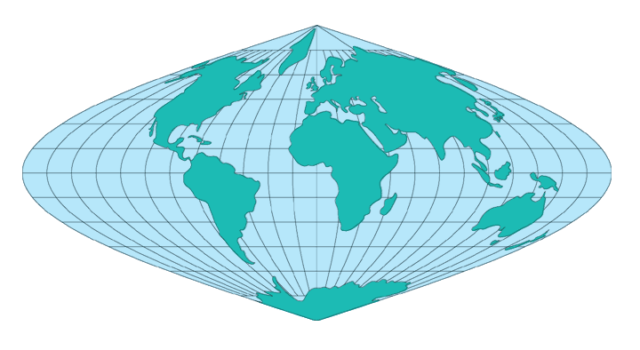

The simplicity of construction, either graphically or mathematically, combined with the useful features obtained, make the Sinusoidal projection popular. On the normal Sinusoidal projection, the parallels of latitude are equally spaced straight parallel lines, and the central meridian is a straight line crossing the parallels perpendicularly. The Equator is marked off from the central meridian equidistantly for meridians at the same scale as the latitude markings on the central meridian, so the Equator for a complete world map is twice as long as the central meridian. The other parallels of latitude are also marked off for meridians in proportion to the true distances from the central meridian. The meridians connect these markings from pole to pole. Since the spacings on the parallels are proportional to the cosine of the latitude, and since the parallels are equally spaced, the meridians form curves which may be called cosine, sine, or sinusoidal curves.
Areas are shown correctly. There is no distortion along the Equator and central meridian, but distortion becomes pronounced near the outer meridians, especially in the polar regions. It is adequate for small scale usage.
*Usage information source:
Snyder, John P. Map Projections - A Working Manual Paper U.S. Geological Survey Professional Paper 1395. Washington: United States Government Printing Office, 1987.